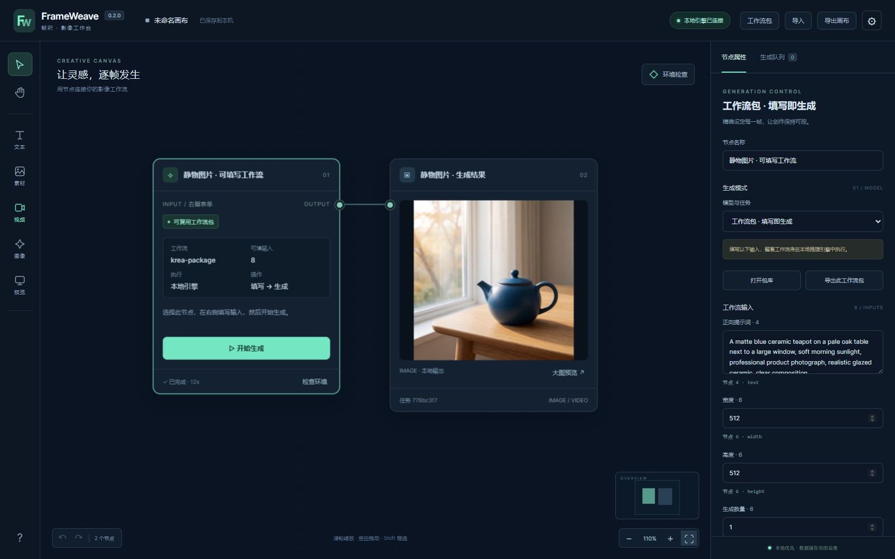

+ SOFTWARE, STORIES & LITTLE EXPERIMENTS
创作，
是另一种表达。
写软件，也探索影像与更多创作。
这里收集我的想法，以及它们成为作品的过程。
FEATURED / 01创作与管理

让创作过程看得见
FrameWeave 帧织
SOFTWARE COLLECTION
软件作品/ 09
从创作工作台到桌面伙伴，为实际需要而写。
没有找到这个作品
试试项目名、用途，或查看全部作品。
WORK IN PROGRESS
最近更新
每一个小版本，都是向前的一步。
保持好奇。
继续打磨。
这里展示软件的公开版本进展。
完整记录与平台说明见项目发布页。
你好，我是 turnsolesama。
这里是我的个人作品集。软件是其中的一部分，之后也会收录视频与其他创作，记录不同形式的想法与尝试。
目前的软件作品围绕本地 AI 工作流、桌面效率和桌面伙伴展开。使用说明、版本下载与问题反馈，都可以从对应项目进入。
访问我的 GitHub ↗